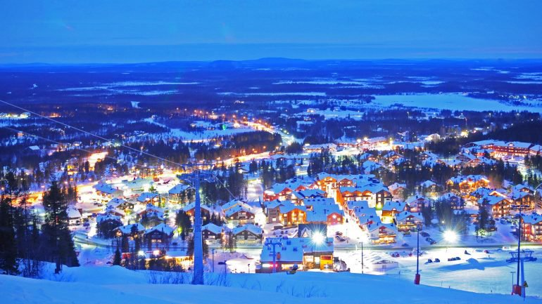

Finlândia |
|
Finlândia , oficialmente República da Finlândia, é um país nórdico situado na região da Fino-Escandinávia, no norte da Europa. Faz fronteira com a Suécia a oeste, com a Rússia a leste e com a Noruega ao norte, enquanto a Estôniaestá ao sul através do Golfo da Finlândia. A capital do país éHelsinque. Cerca de 5,3 milhões de pessoas vivem na Finlândia, sendo que a maior parte da população está concentrada no sul do país. É o oitavo maior país da Europa em extensão e o país menos densamente povoado da União Europeia. A língua materna de quase toda a população é o finlandês, que é uma das línguas fino-úgricas e é mais estreitamente relacionado com o estoniano. O finlandês é apenas uma das quatro línguas oficiais da UE que não são de origem Indo-Europeia. A segunda língua oficial da Finlândia - o Sueco - é a língua nativa de 5,5 por cento da população.
 |